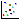
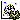

Use "File -> Load alignment" or the corresponding button in the button bar (
 ) to load it. The program accepts PIR and multiple-fasta formats. Proteins are arranged in rows and the columns represent equivalent positions between these proteins.
) to load it. The program accepts PIR and multiple-fasta formats. Proteins are arranged in rows and the columns represent equivalent positions between these proteins.XXXXX. The program requires Java 1.5 or higher to be installed in your system. Once the program is installed, run it by double-clicking the jdet-1.3.jar file or with the following command line: java -jar jdet-1.3.jar
The basic input for the program is a multiple sequence alignment (MSA) of proteins.
Use "File -> Load alignment" or the corresponding button in the button bar () to load it. The program accepts PIR and multiple-fasta formats. Proteins are arranged in rows and the columns represent equivalent positions between these proteins.
The results of the programs for detecting conserved positions and SDPs totally depend on the quality of the MSA used as input. The program allows to do some basic filtering of the loaded MSA, although the user is encouraged to carefully inspect/change his/her alignment depending on the source it comes from. Use "File -> Filter alignment" or the corresponding button of the bar ( ) and select the filtering parameters in the dialog box.
) and select the filtering parameters in the dialog box.
These parameters are:
The user can change these parameters freely or select sets of parameters found useful for different programs/situations. Jdet contains two sets of parameters for the two programs included in the installation (Xdet and S3Det) but the user can add more sets by editing the conf/filterPresets.dat file.
The filtered alignment can be saved with "File -> Save alignment" or the corresponding button ( ).
).
Aminoacids in the MSA can be colored according with different schemas using the "Color" menu. Apart from the four schemas included, the user can import any other schema with the "Color -> User defined" option. The input for this option is a file associating a numerical value (e.g a physico-chemical property) to each of the 20 aminoacid. Examples of such files can be found in the examples/colors directory of the installation. The aminoacids are colored by associating a color scale to the range of numerical values. Two different color scales can be selected in the "Color" menu: RGB (from red -low values- to green -medium values- to blue -high values-) or RB (from red -low values- to blue -high values-). The selected scale is shown in the bottom-left corner of the window, indicating the minimum and maximum value.
Proteins, positions, or particular aminoacids within the positions can be selected in order to perform different operations with them (explained below). To select a set of proteins simply click their IDs. To select entire positions (columns) of the MSA click in the corresponding column numbers (blue panel). To select a particular aminoacid within a column simply click on any instance of it in the column. Selections are always cumulative. To remove from the selection an already selected protein, column or aminoacid, simply click it again. To completely clear the current selection of proteins or positions/aminoacids use the corresponding options in the "Selection" menu or the equivalent buttons of the bar (). Note that, since selections are cumulative, "unselecting" is a very common operation in Jdet. For this reason, it is recommended to perform it with the button in the tool-bar, instead of the menu.
The "subalignment" defined by the current selection of proteins and positions can be shown in a separated window or exported to a FASTA file with the corresponding options of the "Selection" menu or the buttons in the bar ( ).
).
The current representation shown in the alignment window (with the current color schema, the currently highlighted selected protein and positions, etc) can be exported to a PNG image file with "File -> export PNG file" or the corresponding button.
If the structure of any protein in the MSA (or a close homolog) is known, it can be shown and manipulated in the included Jmol viewer (http://www.jmol.org). This can be done with "File -> Load structure" or the corresponding button in the bar ( ). A dialog appear where the user has to provide a local PDB file with the 3D structure or its 4-character PDB ID (http://www.rcsb.org). In the last case, the structure is directly retrieved from the RCSB/PDB site and hence this requires an active Internet connection. Since PDB files might contain multiple protein chains, the user has to indicate which chain he/she is referring to. Finally, the user has to select in the dialog which sequence in the MSA corresponds to the structure. A perfect match between the sequence in the PDB file and that in the MSA is not required. The program aligns both sequences with a simple heuristic method to find the best correspondence between their positions. This allows to incorporate structures of close homologs, as well as those of fragments or longer versions of the sequence of interest. A window pops-up with the alignment found by the program between the sequence in the PDB file and that in the alignment, indicating the matching residues as well as the percentages of identity, in order for the user to check it before going on. Note that the alignment method used is not exhaustive (e.g. Smith-Waterman or similar) and hence it is intended only for cases of very high similarity (Actually, the only ones for which it would make sense to load an structure in this context).
). A dialog appear where the user has to provide a local PDB file with the 3D structure or its 4-character PDB ID (http://www.rcsb.org). In the last case, the structure is directly retrieved from the RCSB/PDB site and hence this requires an active Internet connection. Since PDB files might contain multiple protein chains, the user has to indicate which chain he/she is referring to. Finally, the user has to select in the dialog which sequence in the MSA corresponds to the structure. A perfect match between the sequence in the PDB file and that in the MSA is not required. The program aligns both sequences with a simple heuristic method to find the best correspondence between their positions. This allows to incorporate structures of close homologs, as well as those of fragments or longer versions of the sequence of interest. A window pops-up with the alignment found by the program between the sequence in the PDB file and that in the alignment, indicating the matching residues as well as the percentages of identity, in order for the user to check it before going on. Note that the alignment method used is not exhaustive (e.g. Smith-Waterman or similar) and hence it is intended only for cases of very high similarity (Actually, the only ones for which it would make sense to load an structure in this context).
In the Jmol window, the selected chain is shown in ribbon representation, the heteroatoms (prostetic groups, ligands, etc) in spacefill and colored yellow, and the other chains of the PDB file with thin backbone. This window contains also a text-box to execute Jmol/Rasmol commands. Take a look at the Jmol documentation (http://jmol.sourceforge.net/docs/) for information on how to manipulate the structure as well as on Jmol/Rasmol commands.
Residues in the 3D structure can be selected by clicking on them. These are highlighted in green in the structure and the corresponding positions are also selected in the MSA window. And in the other way around: selections (and de-selections) in the MSA (see above) are translated to the 3D structure. The Jmol/Rasmol commands (see above) affect the current selection only. For example, if a set of positions is selected in the MSA window (and consequently highlighted in green in the 3D structure) and the following command is typed in the Jmol window: spacefill; color red the result is the set of selected residues to become red and "spacefilled". For the commands to affect not only the current selection but the whole chain or PDB file these have to be previously selected in Jmol; for example: select all; spacefill; color red or select *A; spacefill; color red respectively.
Jdet was designed as a platform for integrating and visualizing the results of different programs/methods for detecting conservation patterns in MSA's related to functionality (basically conservation and SDP's -see reference above-). The basic result of one of these programs is a set of positions of the MSA (predicted to have some functional importance) and eventually numerical scores associated to them. These results can be imported with the "File -> Load method result -> XXX" menu items or the corresponding buttons ( 
 ). Right now the program can read the results of two recently developed methods: Xdet (http://pdg.cnb.csic.es/pazos/Xdet/) and S3Det (XXX) and a generic format ("user defined") which opens the possibility of importing the results of any other program by converting it to this simple format. A simple description of this format appears in the dialog box when using this option, and an example can be found in the examples/userdef.txt file. Jdet can read the results of the "supervised" and "unsupervised" versions of Xdet and S3Det since the file format is the same. See the references given above for these programs for more information on supervised/unsupervised.
). Right now the program can read the results of two recently developed methods: Xdet (http://pdg.cnb.csic.es/pazos/Xdet/) and S3Det (XXX) and a generic format ("user defined") which opens the possibility of importing the results of any other program by converting it to this simple format. A simple description of this format appears in the dialog box when using this option, and an example can be found in the examples/userdef.txt file. Jdet can read the results of the "supervised" and "unsupervised" versions of Xdet and S3Det since the file format is the same. See the references given above for these programs for more information on supervised/unsupervised.
The results of up to four methods can be loaded simultaneously. These are piled up above the alignment. For each method loaded, it is shown the name of the method (for "user defined" the names of the files), a text box and a slider bar to control the method's threshold (see below), two buttons ( )to perform selections according with the method's results (see below), and green circles highlighting the positions reported by that method with scores above the selected threshold. The results of Xdet appear as two different methods: Xdet and Entropy (a measure of conservation) since the results file of this program contains both types of data. Moving the slider bar changes the set of positions shown for that method (green circles) in real time. This allows to explore more permissive or restrictive cutoffs of the method.
)to perform selections according with the method's results (see below), and green circles highlighting the positions reported by that method with scores above the selected threshold. The results of Xdet appear as two different methods: Xdet and Entropy (a measure of conservation) since the results file of this program contains both types of data. Moving the slider bar changes the set of positions shown for that method (green circles) in real time. This allows to explore more permissive or restrictive cutoffs of the method.
Note that with "user defined" we can not only import the result of any other program, but also any arbitrary set of positions we are interested in. This allows a number of useful tricks, e.g. to load a set of experimentally determined functional positions and evaluate its agreement (or closeness in a 3D structure) with a set of predictions, etc.
The positions currently shown for a given method (i.e. above the selected threshold) can be selected in a single shot by clicking the button for that method, or with the "Selection -> selection from method -> XXX" menu path. For selecting the positions reported concomitantly by more than one method (i.e. to search for consensus/stable results) click on the button for one of the methods, and the button for the others. So the button works as a sort of "AND" selection criteria. These "method-based" selections behave the same as any other selection (i.e. they are highlighted in the 3D structure if available, etc.) Note that many of the operations with selections explained in the previous sections acquire more sense for these method-based selections (e.g. to inspect in a separate window the sequence characteristics of positions predicted by a method, their characteristics in the 3D structure, etc.)
Apart from loading files with results previously generated by Xdet and S3Det, the package includes versions of these programs for different operative systems and hence they can be run from within Jdet for the alignment currently loaded, and the results automatically imported. This can be done with the "File -> Run method -> XXX" menu items or with the corresponding buttons in the tool-bar ( ). In the dialog box which pops up, the user can modify the parameters of the command line that will be used for running the programs (i.e. adding or removing options). Take a look at the documentation of these programs (Xdet and XXXX -links-) for information on the parameters of the command line, etc. Changing these parameters allows, for example, to run these programs in "unsupervised" or "supervised" mode. See the documentation of the programs and their references (above) for more information on supervised/unsupervised. The default command lines suggested in the dialog are for "unsupervised" runs with typical parameters.
These results generated "on-the-fly" by running the programs from within Jet can be saved to files for future uses and for avoiding running the programs again for the same alignment. This can be done with the "File -> Save method results -> XXX" menu items or the corresponding buttons ( ).
).
The results of S3Det contain information not only on the positions predicted to be SDPs but also on the subfamily composition of the MSA as well. This subfamily partition is automatically calculated by S3Det when run in "unsupervised" mode, or is that used as input when the "supervised" mode is used. Additionally, S3Det uses a sophisticated and elegant vectorial representation of proteins and residues in order to detect subfamilies and their associated SDPs (see the reference above). These vectorial representations contain a lot of information of which the final set of predicted SDPs is just a summary. Manually inspecting these vectorial spaces can provide additional important information (e.g. other possible subfamily partitions or SDPs nor reported automatically due to the threshold used). For these reasons, Jdet incorporates specific tools for working with the subfamilies and sequence spaces reported by S3Det.
When a file with S3Det results is loaded, or S3Det is run, the proteins in the MSA are automatically grouped and colored according with the subfamily classification.
A window with the "sequence spaces" can be opened with "File -> show sequence spaces" or the corresponding button (). S3Det represents each protein and each residue in a given alignment position as a vector in a high dimensional space. 3D projections of that space are shown in this window, separating the vectors of the proteins (left) and those of the residues (right). The user can rotate these spaces with the mouse. The rotation is coordinated since relating the "spatial positions" of proteins and residues is indeed the basis of the methodology for detecting SDPs associated to subfamilies. The user can choose which particular set of three axis of the multidimensional space to shown in the projections. Axis are sorted by their information content, and hence usually the first three axis (1st, 2nd and 3rd) are those in which the subfamily partition of the MSA is more evident. Nevertheless, other axis can contain information on deeper levels of subfamily divisions. In this representation, proteins (dots) are colored according with their subfamily assignment, as in the MSA. In the residue space, the centers of the family clusters are colored in the same way, and the black dots represent the centers of "multifamily" clusters (e.g. the cluster formed by subfamilies A+B, A+C, etc.)
Residues and proteins can be selected in these spaces by "dragging" a box around them by moving the mouse (with the left button pressed) while pressing "SHIFT" at the same time. Selected proteins become colored black, and selected residues red. Selections in these spaces are automatically translated to the MSA and the 3D structure (if available). And the other way around, selections in the MSA or the 3D structure (see above) are highlighted in these spaces. So, the three main windows of the program (MSA, 3D structure and sequence spaces) are fully connected in all directions, in the sense that selections in any of them are automatically translated into the others. This opens many possibilities such as inspecting the position in the structure of a set of residues close to a given subfamily in the sequence space, their sequence patterns, etc.
Sequence logos (http://en.wikipedia.org/wiki/Sequence_logo) are specially useful for inspecting conservation patterns, either fully conservation or family-dependent conservation related to functional specificity (SDPs). Jdet can create sequence logos in two ways: global sequence logos, or subfamily-based. In the second case, the logos are calculated for each subfamily independently, what is very useful for inspecting the differential conservation patters associated to the subfamilies. In both cases, if there is an active selection of positions and/or proteins, the logos are calculated for the "subaligment" defined by the selection. The capability of generating global and subfamily-dependent logos, combined with the generation of logos for subsets of positions (selection), opens a large number of interesting possibilities: e.g. generating the logo for the subset of positions predicted by a given method (SDPs) in a subfamily-dependent way in order to assess the differential conservation patterns associated to these SDPs, etc.
To create both types of sequence logos use the corresponding options in the "Selection" menu or the buttons in the bar ( ).
For updated information on Jdet, links to the last versions of binaries and source code, etc., bookmark the following URL: http://csbg.cnb.csic.es/Jdet
For any comment or question about this software please contact Florencio Pazos (). Note that Jdet is a free academic software without any warranty.
Please cite the following reference when reporting any result or image generated with this software: